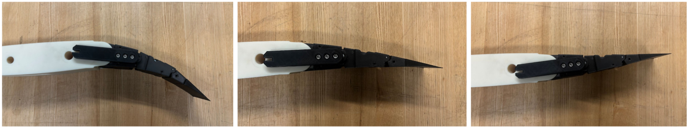
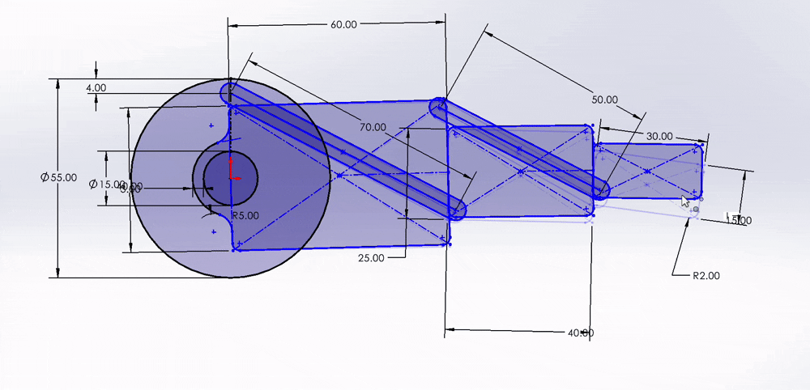
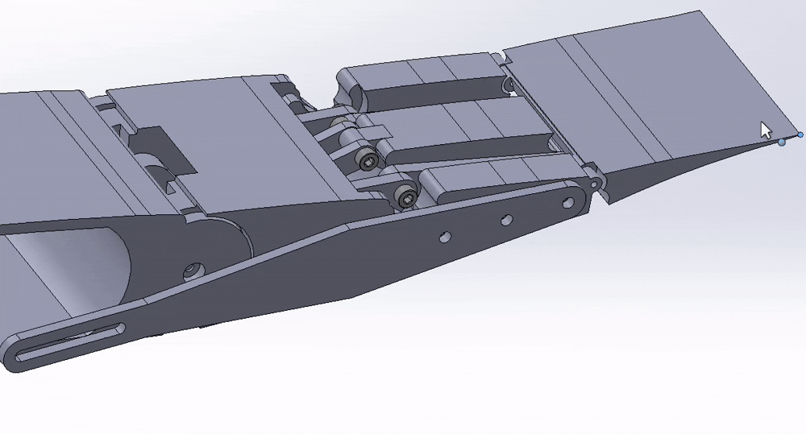
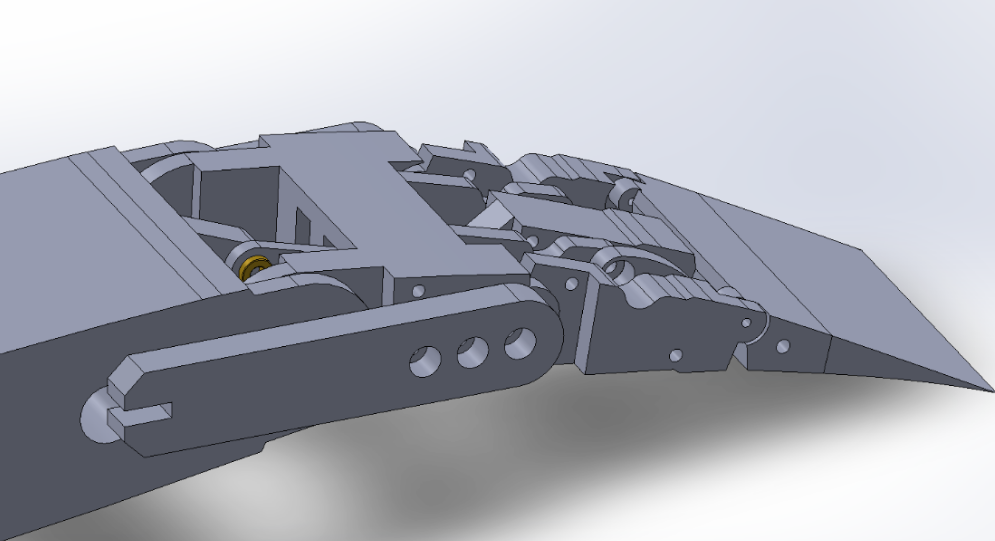
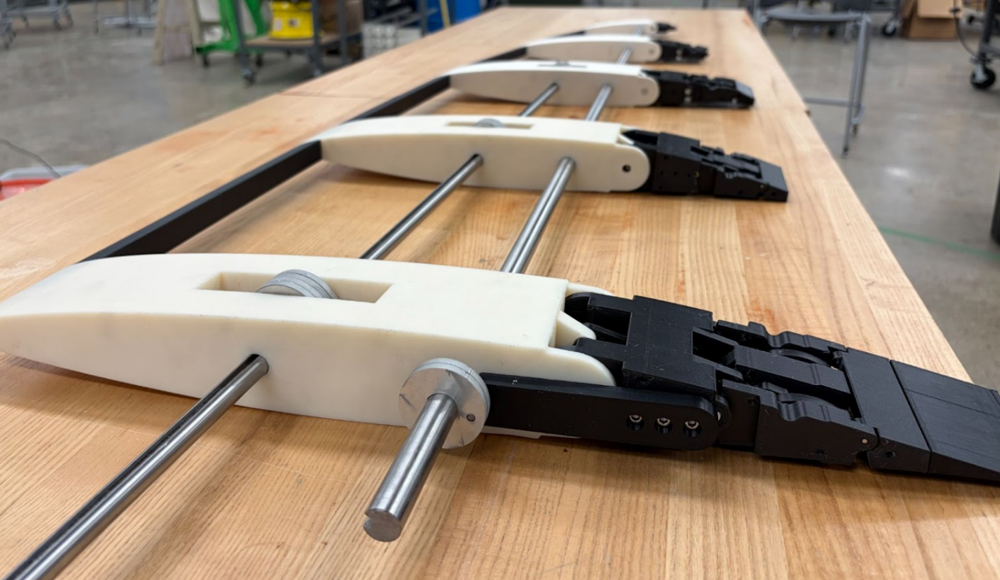
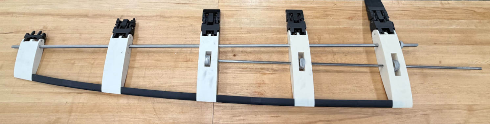
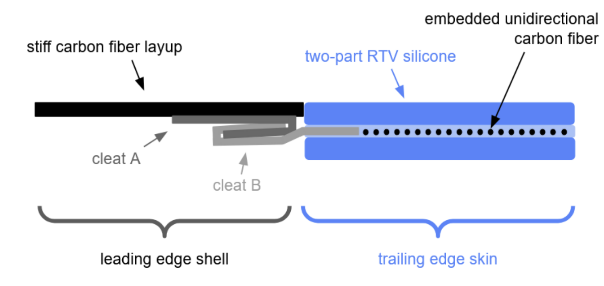
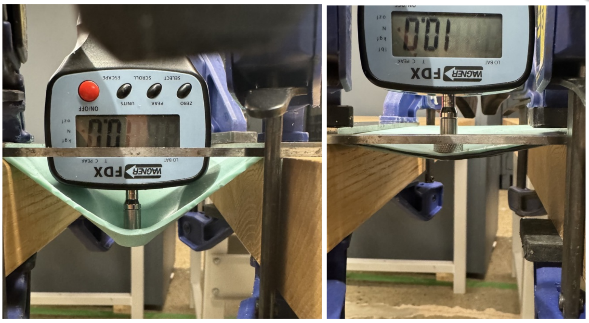
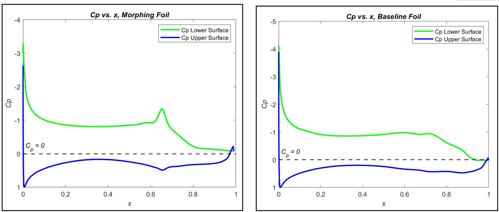
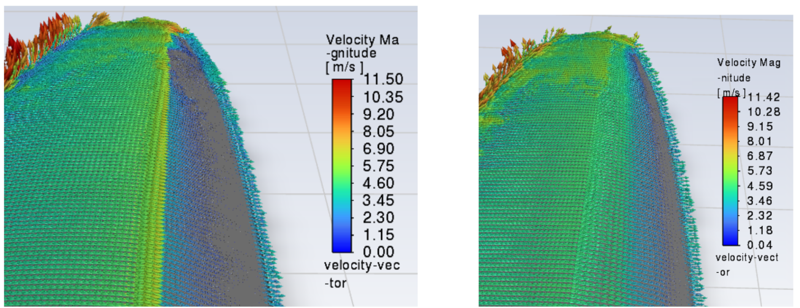

A capstone project: a hydrofoil that continuously morphs its camber and thickness mid-race to optimize lift and drag across changing conditions.

After presenting to a panel of judges against the other senior ME capstone teams, our project was selected as the winning capstone of the cohort.
Fixed hydrofoils force racing boats into a trade-off: thick, cambered foils make great lift at low speed but pile on drag at speed, while thin foils are fast but slow to take off. Today's racing teams swap entire foils between races to chase conditions, or rely on hinged flaps that leak flow and trigger cavitation. The team's goal for this senior capstone was a hydrofoil that morphs continuously, adjusting both thickness and camber mid-race, to hold an optimal profile through the whole speed range.
The full system uses two driving mechanisms inside a shared internal skeleton: a cam-driven axle that controls thickness along the leading edge, and a linkage-driven axle that bends the trailing edge to control camber. The two mechanisms are wrapped in a hybrid skin, a stiff carbon-fiber leading edge and a uniaxial-carbon-reinforced silicone trailing edge, that keeps a continuous, flap-free profile.
This was a five-person capstone advised by Prof. Safa Jamali, with team members Vanessa Khangi, Lily Knott, Adrian Winkelman, Jack Wortman, and myself. My focus was the trailing-edge camber mechanism, the linkage design, the SolidWorks modeling, and the 3D-printed prototype iterations. I also contributed to the internal skeleton and full-wing assembly. The sections below lead with that work, and then walk through the rest of the project that the team built around it.
Traditional racing foils control camber with a hinged flap, which produces a sharp kink in the profile and a pressure spike that drives flow separation and cavitation. I wanted the trailing edge to deflect as a continuous curve instead of a single hinge, while still being driven by a single shaft so the whole span could be actuated by one motor.
I used Gruebler's equation as the starting constraint, the system had to land at exactly one degree of freedom so a single input shaft could fully determine the trailing-edge shape. A Watt-1 six-bar configuration satisfied that, and gave me enough geometric freedom to spread the deflection across three rigid segments hinged in series, rather than rotating one big flap. The result is a continuous "C" curve at full deflection instead of a kinked corner.

I built the linkage first as a 2D parametric sketch in SolidWorks so I could iterate cheaply on bar lengths and pivot locations. I drove the input link through ten discrete angles, recorded the corresponding output-link rotations, and fit trendlines to that data to characterize the non-linear input-to-output mapping. That mapping is what let me size the input range so the trailing edge would land cleanly on the –15° to +5° envelope the CFD study called for, and avoid pushing the linkage anywhere near a singular configuration.

The first 3D-printed prototype confirmed the kinematics worked, but it also surfaced every problem you would expect from an early plastic linkage: noticeable backlash, tolerance stacking that compounded across the chain of joints, and binding when the mechanism approached singularities. The second-generation design solved these one at a time:

Most of the linkage parts went through three or four print iterations. Printing the whole mechanism in PLA let me spot where parts collided into each other, tune fits on the bushing seats, and physically feel whether a joint was binding before committing to a design freeze. The final printed assembly hits the full –15° to +5° deflection range smoothly, with consistent motion through neutral and no binding through the singularity-adjacent regions of the original design.
The trailing edge is one of two morphing mechanisms in the wing. The team built around it to produce a full, span-spanning foil with thickness control on the leading edge, an internal skeleton tying the two driving shafts together, a hybrid composite skin, and a CFD study that defined what profiles the foil should be able to morph between.


The internal structure is a series of ribs tied together by two spanwise shafts: one driving the cam stack that controls thickness, the other driving the trailing-edge linkages that control camber. Both shafts are actuated by stepper motors that sit outside the foil, with motor sizing back-calculated from a static load analysis of the skin's pre-tension, the team landed on a 30 Nm minimum holding torque to overcome the elastomer skin without backdriving.
The outer surface had to be flexible enough to morph but stiff enough to take hydrodynamic load. The team split it into two materials: a stiff carbon-fiber layup over the leading edge that smooths the point load from the cams into a gradual deflection, and a uniaxial-carbon-reinforced two-part RTV silicone over the trailing edge that stretches freely in-plane for camber changes but resists out-of-plane deformation under load. The two are joined by a sheet-metal cleat system embedded in the silicone.


The starting profile was an optimized AC75 section from a University of Michigan study. The team ran 2D XFoil sweeps across seven design points spanning upwind, downwind, and takeoff conditions, then verified the winning profile in 3D ANSYS Fluent. Replacing the hinged-flap geometry with a continuous morphed curve essentially eliminated the pressure spike at the flap hinge, and in the worst case, the high-lift takeoff condition, cut drag coefficient by 23.87% and minimum pressure coefficient by 34.83% at matched lift.
These results fed directly into the trailing-edge design. The set of target profiles the CFD sweep produced is what defined the –15° to +5° deflection envelope I had to hit, which in turn set the input-angle range, bar lengths, and pivot locations of the six-bar linkage.


The team delivered a working proof-of-concept that demonstrates continuous morphing of both camber and thickness, validated against a CFD-derived performance target. My trailing-edge mechanism transitions cleanly between its full deflection range driven by a single input shaft, with no binding, minimal backlash, and a continuous curve in place of a hinged flap. The natural next step is a Phase II project, scaling the mechanisms to a full sea-trial wing, swapping printed PLA for machined metal, and developing a fully continuous, watertight elastomer skin.